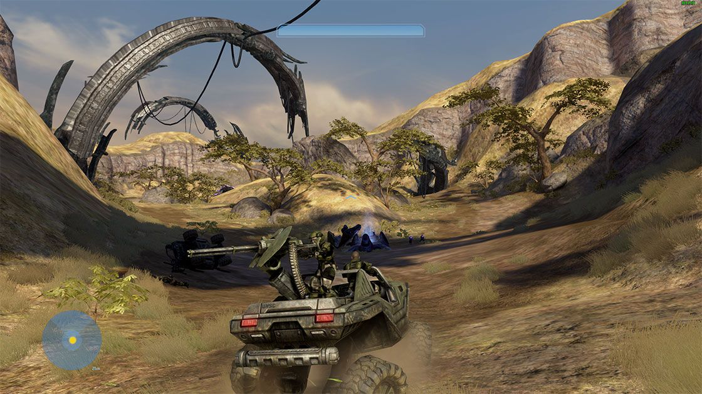
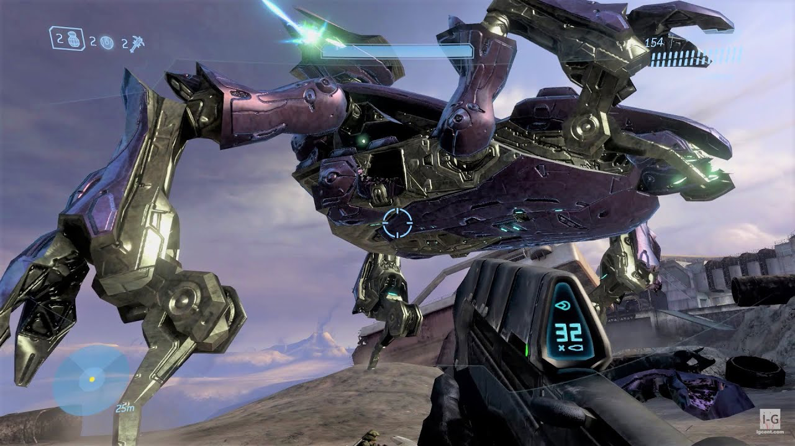
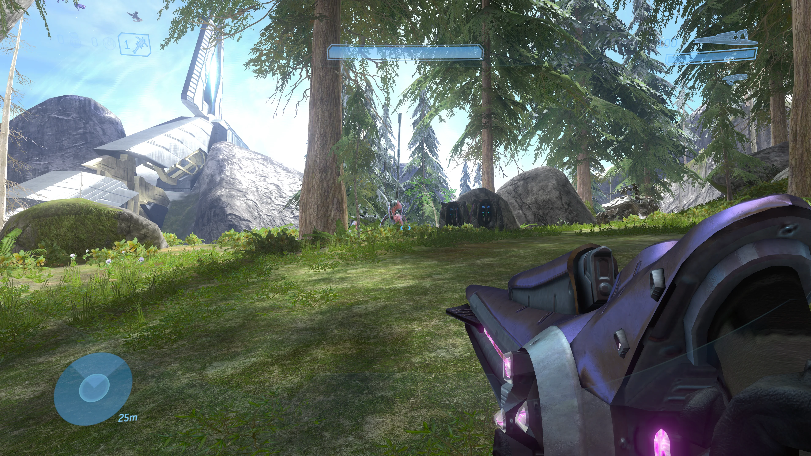
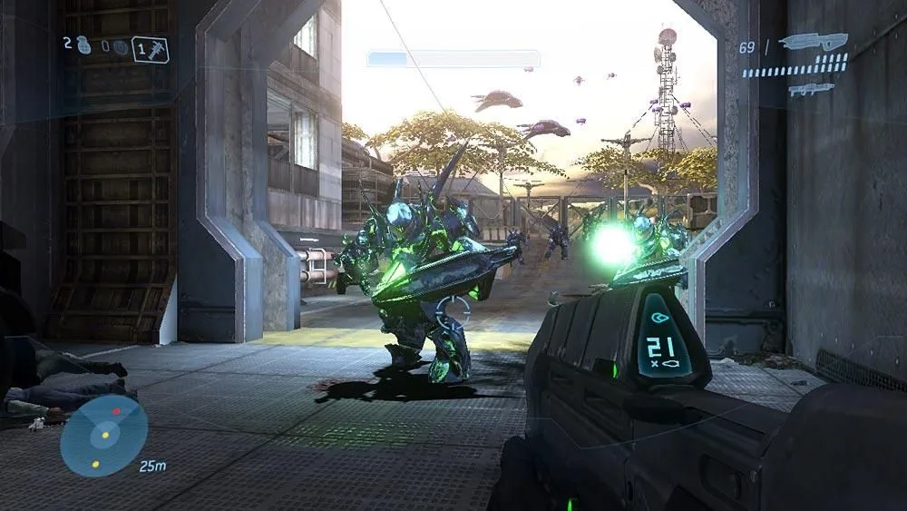
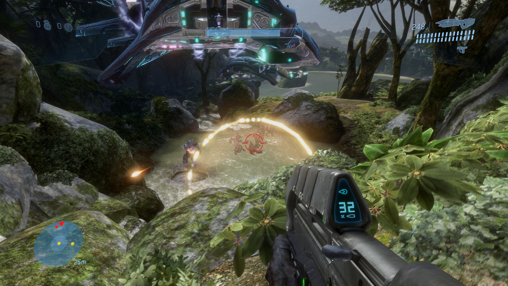
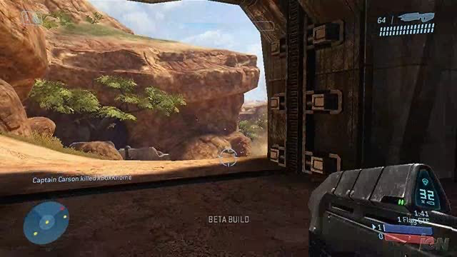

Ficha Táctica
Año de Lanzamiento: 2007
Desarrollador: Bungie
Consola: Xbox 360
Género: Disparos en primera persona (FPS)
Informe de Misión
Bajo el legendario lema "Termina la batalla", la historia arranca con el Jefe Maestro cayendo a la Tierra tras escapar de la capital Covenant, Gran Caridad. Las fuerzas humanas remanentes, exhaustas y superadas en número, unen fuerzas con los Elites rebeldes comandados por el Inquisidor para detener los descubrimientos del Profeta de la Verdad en las ruinas de África. El líder Covenant logra activar un antiguo portal Forerunner sepultado bajo el desierto, transportando a su flota hacia el Arca, una colosal instalación fuera de la Vía Láctea diseñada para construir y activar remotamente todos los anillos Halo.
Paralelamente, el juego introduce una perspectiva revolucionaria al poner al jugador en las botas de Thel 'Vadam (El Inquisidor), un respetado comandante Sangheili (Elite) culpado por la destrucción del primer Halo. Condenado a cumplir misiones suicidas para los Profetas, el Inquisidor descubre gradualmente la manipulación teocrática tras la religión del "Gran Viaje". La traición de los Profetas al reemplazar a los Elites por los brutales Jiralhanae (Brutes) desencadena una sangrienta guerra civil dentro del Covenant (el Cisma Gran), obligando al Inquisidor a forjar una alianza histórica con la humanidad para detener el disparo del anillo.
Registro Visual





